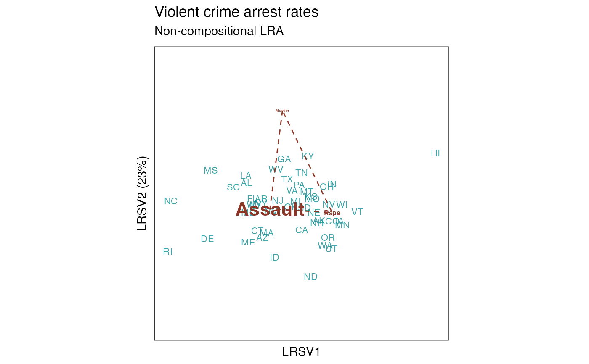

These methods extract data from, and attribute new data to,
objects of class "lra", a class introduced in this package to organize
the singular value decomposition of a double-centered log-transformed data
matrix output by lra().
Usage
# S3 method for class 'lra'
as_tbl_ord(x)
# S3 method for class 'lra'
recover_rows(x)
# S3 method for class 'lra'
recover_cols(x)
# S3 method for class 'lra'
recover_inertia(x)
# S3 method for class 'lra'
recover_coord(x)
# S3 method for class 'lra'
recover_conference(x)
# S3 method for class 'lra'
recover_aug_rows(x)
# S3 method for class 'lra'
recover_aug_cols(x)
# S3 method for class 'lra'
recover_aug_coord(x)Value
The recovery generics recover_*() return core model components, distribution of inertia,
supplementary elements, and intrinsic metadata; but they require methods for each model class to
tell them what these components are.
The generic as_tbl_ord() returns its input wrapped in the 'tbl_ord'
class. Its methods determine what model classes it is allowed to wrap. It
then provides 'tbl_ord' methods with access to the recoverers and hence to
the model components.
See also
Other methods for singular value decomposition-based techniques:
methods-cancor,
methods-correspondence,
methods-lda,
methods-mca,
methods-prcomp,
methods-svd
Examples
# data frame of violent crime arrests in the United States
class(USArrests)
#> [1] "data.frame"
head(USArrests)
#> Murder Assault UrbanPop Rape
#> Alabama 13.2 236 58 21.2
#> Alaska 10.0 263 48 44.5
#> Arizona 8.1 294 80 31.0
#> Arkansas 8.8 190 50 19.5
#> California 9.0 276 91 40.6
#> Colorado 7.9 204 78 38.7
# get state abbreviation data
state <- data.frame(
name = state.name,
abb = state.abb
)
# compute (non-compositional, unweighted) log-ratio analysis
USArrests %>%
subset(select = -UrbanPop) %>%
lra() %>%
as_tbl_ord() %>%
print() -> arrests_lra
#> # A tbl_ord of class 'lra': (50 x 2) x (3 x 2)'
#> # 2 coordinates: LRSV1 and LRSV2
#> #
#> # Rows (standard): [ 50 x 2 | 0 ]
#> LRSV1 LRSV2 |
#> |
#> 1 -0.680 0.930 |
#> 2 0.930 -0.625 |
#> 3 -0.330 -1.31 |
#> 4 -0.351 0.277 |
#> 5 0.552 -1.00 |
#> # ℹ 45 more rows |
#>
#> #
#> # Columns (standard): [ 3 x 2 | 0 ]
#> LRSV1 LRSV2 |
#> |
#> 1 0.283 4.96 |
#> 2 -0.371 -0.181 |
#> 3 2.88 -0.366 |
# augment log-ratio profiles with names and join state abbreviations
arrests_lra %>%
augment_ord() %>%
left_join_rows(state, by = "name") %>%
print() -> arrests_lra
#> # A tbl_ord of class 'lra': (50 x 2) x (3 x 2)'
#> # 2 coordinates: LRSV1 and LRSV2
#> #
#> # Rows (standard): [ 50 x 2 | 3 ]
#> LRSV1 LRSV2 | name weight abb
#> | <chr> <dbl> <chr>
#> 1 -0.680 0.930 | 1 Alabama 0.0271 AL
#> 2 0.930 -0.625 | 2 Alaska 0.0318 AK
#> 3 -0.330 -1.31 | 3 Arizona 0.0333 AZ
#> 4 -0.351 0.277 | 4 Arkansas 0.0219 AR
#> 5 0.552 -1.00 | 5 California 0.0326 CA
#> # ℹ 45 more rows | # ℹ 45 more rows
#>
#> #
#> # Columns (standard): [ 3 x 2 | 2 ]
#> LRSV1 LRSV2 | name weight
#> | <chr> <dbl>
#> 1 0.283 4.96 | 1 Murder 0.0390
#> 2 -0.371 -0.181 | 2 Assault 0.855
#> 3 2.88 -0.366 | 3 Rape 0.106
# recover state and arrest profiles
head(get_rows(arrests_lra))
#> LRSV1 LRSV2
#> Alabama -0.6800120 0.9296011
#> Alaska 0.9299899 -0.6245772
#> Arizona -0.3298496 -1.3115817
#> Arkansas -0.3513443 0.2773231
#> California 0.5516590 -1.0042801
#> Colorado 1.2291066 -0.6388469
get_cols(arrests_lra)
#> LRSV1 LRSV2
#> Murder 0.283086 4.9570302
#> Assault -0.370595 -0.1805698
#> Rape 2.876702 -0.3660163
# initially, inertia is conferred on neither factor
get_conference(arrests_lra)
#> [1] 0 0
# row-principal biplot
arrests_lra %>%
confer_inertia("rows") %>%
ggbiplot(aes(color = .matrix), sec.axes = "cols", scale.factor = 1/20) +
scale_color_manual(values = c("tomato4", "turquoise4")) +
theme_bw() + theme_biplot() +
geom_rows_text(aes(label = abb), size = 3, alpha = .75) +
geom_cols_polygon(fill = NA, linetype = "dashed") +
geom_cols_text(aes(label = name, size = weight), fontface = "bold") +
scale_size_area(guide = "none") +
ggtitle(
"Violent crime arrest rates",
"Non-compositional LRA"
) +
coord_scaffold() +
guides(color = "none")
